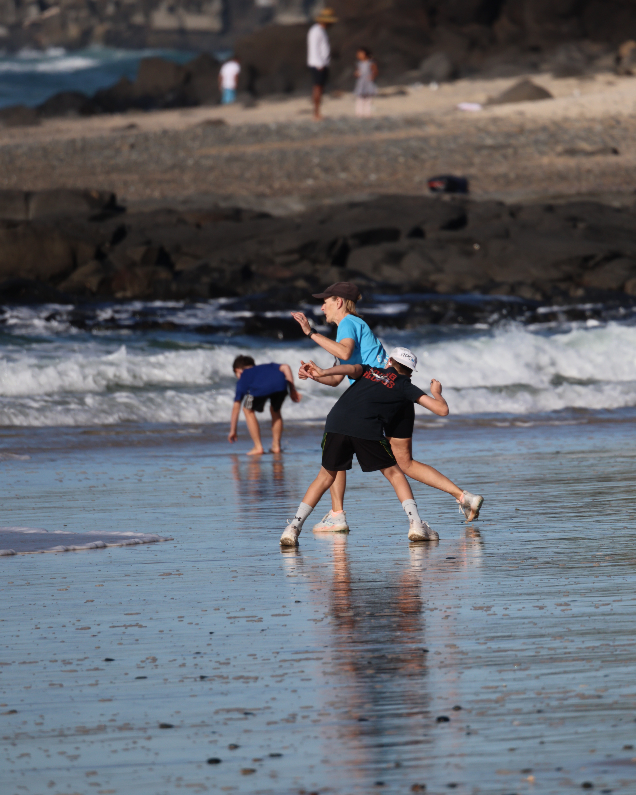

Sunday mornings · Ballina, NSW
Everyone startsat their own time.Anyone can win.
A community handicap fun run on Shelly Beach. 1, 3 or 6 kilometres through the dunes and bush, every Sunday through the cooler months. Ages 1 to 92, all paces welcome.
Sunday start board
3K · this weekFaster runners leave last. Run to your handicap and you all arrive together.
The fair start
The handicap is the whole point
Most races reward whoever is fastest. We reward whoever runs best on the day. Everyone gets a personal start time based on their recent runs, so a nine-year-old and a club veteran can genuinely race each other to the line.
You get a start time
Based on how you have been running. Slower starters leave first, quicker ones chase.
You check it each week
Handicaps move every Sunday, so check yours before you run.
You all aim for the same line
Run to your handicap and the whole field finishes within a breath of each other.
Why people stay
Because on any given Sunday, the trophy is up for grabs whether you ran a personal best or just turned up in your slippers. The clock keeps it honest. The handicap keeps it fair. The beach keeps it worth the early alarm.
New to all this? Read the full handicap explainer, or just come down and we will sort you out on the morning.
Shelly Beach · 9am
This is your Sunday morning
A few hundred locals, every age and pace, on the sand before breakfast. Come and find your start time.
Straight from the timing desk
Latest results
No more waiting for a Facebook post. These load automatically the morning after each race.
| Runner | Distance | Finish | Points |
|---|---|---|---|
| Loading the latest results… | |||
Updated automatically after every race day.
Pick your distance
One, three or six
Same start, same finish line, same beach. Choose the distance that suits you this week. You can change your mind next week.
The taster
Perfect for littlies, first-timers and anyone easing back in. Flat and friendly.
The favourite
The classic loop along the beachfront paths. Most of the field runs this one.
The long one
Beach paths into the bush trails for the keen. Earns the post-run barbecue.
Points & prizes
Thirty dollars, surprisingly good value
Arguably the best investment this side of Bitcoin, and far less likely to crash before breakfast.
Weekly points
Score every Sunday based on how you run against your handicap. It all adds up.
Lucky dip draws
Two $20 prizes every single week. You just have to be there for the draw.
Monthly trophies
Presentations at the end of each month for the runners who topped the points.
Season finale
Trophies and cash at the end of the season for the year's standout runners.
Beachside barbecues
The occasional free feed for members, because running should be rewarded.
The actual point
A few hundred locals, all ages, on the sand on a Sunday. That is the prize.
Your first morning
Turn up. We do the rest.
No need to be fast, fit or sure of what you are doing. Arrive a little early, grab your bib, and a volunteer will walk you through it. Your first run is just a time trial so we can set your handicap.
How Sunday runs
- 8:30amArrive at Shelly Beach and pick up your bib from the registration desk.
- Bib onWear it on the front of your shirt. No visible number, no recorded time.
- StartFind your handicap time on the board and leave the line when it is called.
- FinishGrab your finish number and take it to the scribe to log your time.
- 9:00amThe whole thing kicks off at nine. Stay for the lucky draw.
On the sand
Sundays at Shelly Beach
Real mornings, real members. Photography by the club.




Come down this Sunday
Register once and you are covered for the whole season. New members, fill in the form before your first run so we can have your numbers ready.
Tip: register by Friday 6pm to run with your numbers that Sunday.